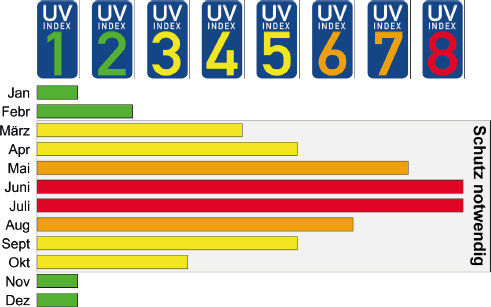
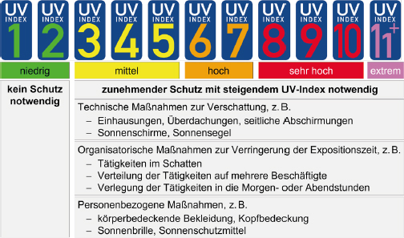

Akute und chronische Gesundheitsschäden als Folge der Einwirkung von natürlicher UV-Strahlung, insbesondere Schäden an Haut und Augen, sind durch Minimierung der beruflichen UV-Gesamtdosis mit Hilfe entsprechender Maßnahmen zu vermeiden.
Hinweise:
1. Akute Folgen einer übermäßigen UV-Exposition der Haut können z. B. Sonnenbrand, beginnend mit Hautrötungen (Erythem), und photosensitive Hauterkrankungen (Photodermatosen) sein. Akute Schädigungen des Auges können Horn- und Bindehautentzündung sein. Chronische Folgen einer langzeitigen UV-Exposition der Haut, auch ohne Auftreten eines Sonnenbrandes, können Hautkrebs und Vorstufen (z. B. aktinische Keratosen) sein. Bei den Augen ist u. a. eine Linsentrübung (grauer Star) möglich.
2. Die Einnahme bestimmter Medikamente, Tätigkeiten mit bestimmten Arbeitsstoffen und der Kontakt mit speziellen Pflanzen können die Empfindlichkeit gegenüber natürlicher UV-Strahlung erhöhen (siehe auch TRGS 401 "Gefährdung durch Hautkontakt" Anhang 7).
(1) Zur Beurteilung von Gefährdungen durch natürliche UV-Strahlung ist der zu erwartende lokale Höchstwert des UV-Index während der Tätigkeit maßgeblich, wobei der Tagesverlauf des UV-Index zu berücksichtigen ist.
Hinweise:
1. Auch im Schatten oder bei bewölktem Himmel kann eine Gefährdung durch natürliche UV-Strahlung vorhanden sein.
2. Glänzende Oberflächen, wie etwa bei Metallen oder Glasfassaden, können hohe Anteile natürlicher UV-Strahlung reflektieren und damit die Gefährdung durch natürliche UV-Strahlung erhöhen. Matt erscheinende Materialien, z. B. Holzwerkstoffe, sind hingegen häufig reflexionsarm.
(2) Aufgrund der einfachen Handhabbarkeit ist der UV-Index als etablierter Bewertungsmaßstab zur Ermittlung der Gefährdungen durch natürliche UV-Strahlung anzuwenden. UV-Index-Werte bis 2 sind mit einer geringen, bis 5 mit einer mittleren, bis 7 mit einer hohen, bis 10 mit einer sehr hohen und ab 11 mit einer extremen Gefährdung durch natürliche UV-Strahlung verbunden.
Hinweise:
1. Als orientierende Planungshilfe ist eine Übersicht der im langjährigen Durchschnitt ermittelten Tageshöchstwerte für Deutschland im UV-Index Jahreskalender in Abbildung 1 dargestellt. Je nach Bewölkungssituation und geografischer Lage kann ein abweichender lokaler UV-Index vorliegen (siehe Abschnitt 5.2), der bei der Umsetzung der Maßnahmen zu beachten ist (siehe Abschnitt 5.3).
2. In den Mittagsstunden tritt für gewöhnlich der UV-Index-Tageshöchstwert auf.
3. Insbesondere im Frühjahr kann sich durch bestimmte atmosphärische Bedingungen ein über dem langjährigen Durchschnitt liegender UV-Index einstellen, der in Kombination mit milden Temperaturen, leichter Bekleidung und nach dem Winter wenig an Sonnenstrahlung gewöhnte Haut eine erhöhte Gefährdung durch natürliche UV-Strahlung bewirkt.
4. Der UV-Index berücksichtigt nicht individuelle und situative Empfindlichkeiten wie Hauttyp, Ausrichtung der Haut gegenüber der Sonne, Tätigkeiten mit photosensitiven Stoffen oder Reflexionen vor Ort.

Abb. 1: UV-Index Jahreskalender für Deutschland (im langjährigen Durchschnitt ermittelte UV-Index-Tageshöchstwerte, geordnet nach Monaten; Quelle: www.baua.de/solarUV, © BAuA)
(1) Der UV-Index kann öffentlich zugänglich, aktuell und als Prognose, z. B. auf der Internetseite des Bundesamtes für Strahlenschutz (www.bfs.de/DE/themen/opt/uv/uv-index/uv-index_node.html) und beim Deutschen Wetterdienst (DWD) für viele Orte in Deutschland abgerufen werden (https://kunden.dwd.de/uvi_de).
(2) In unklaren Expositionssituationen, z. B. bei erhöhter UV-Reflexion von spiegelnden Oberflächen oder in großen Höhen über dem Meeresspiegel, können ergänzende Messungen vor Ort zur Berechnung des lokalen UV-Index zweckmäßig sein; darüber ist im Einzelfall zu entscheiden. Im Wesentlichen stehen 3 grundlegende Verfahren zur Verfügung:
(1) Ab einem UV-Index von 3 sind Maßnahmen gemäß dem TOP-Prinzip zu ergreifen. In der Regel ist eine sachgerechte Verknüpfung von technischen, organisatorischen und personenbezogenen Maßnahmen für einen wirkungsvollen Schutz vor natürlicher UV-Strahlung erforderlich. Abbildung 2 ordnet den Werten des UV-Index eine niedrige bis extreme Gefährdung durch natürliche UV-Strahlung zu und verknüpft diese beispielhaft mit technischen, organisatorischen und personenbezogenen Maßnahmen. Ab UV-Index 8 sind personenbezogene Maßnahmen zwingend erforderlich.

Abb. 2: Beurteilung der Gefährdung durch natürliche UV-Strahlung anhand des UV-Index mit beispielhaften Maßnahmen
(2) Die Beschäftigten sind bei der Unterweisung über die Gefährdungen durch natürliche UV-Strahlung zu informieren, entsprechende Maßnahmen sind anzuweisen und zu erläutern.
Hinweise:
1. Es wird empfohlen zu prüfen, ob eine arbeitsmedizinische Vorsorge gemäß AMR 13.3 "Tätigkeiten im Freien mit intensiver Belastung durch natürliche UV-Strahlung von regelmäßig einer Stunde oder mehr je Tag" erforderlich ist.
2. Im Rahmen einer Unterweisung bietet sich eine Kombination mit den Themen Hitze, Gewitter, Blitzschlag und Niederschlag an.
(1) Zu den technischen Maßnahmen gehören alle Formen der Verschattung von Arbeitsplätzen. Nachfolgend werden Beispiele genannt.
(2) Bei allen technischen Maßnahmen ist darauf zu achten, dass im Arbeitsbereich der Beschäftigten kein Hitzestau entsteht; bei Bedarf sind Kompensationsmaßnahmen zu ergreifen, z. B. durch Belüftung oder Klimatisierung.
Hinweis:
Informationen zu Arbeit in Hitze und Maßnahmen enthält die "Empfehlung des Ausschusses für Arbeitsstätten (ASTA) zur Beurteilung der Gefährdungen durch Hitze und Maßnahmen an Arbeitsplätzen in nicht allseits umschlossenen Arbeitsstätten und an Arbeitsplätzen im Freien".
Organisatorische Maßnahmen dienen der Verringerung der Aufenthaltszeit in der Sonne, insbesondere zu Tageszeiten mit hohem UV-Index, z. B. durch:
(1) Personenbezogene Maßnahmen sind z. B.:
Abb. 3: UV-A-Schutz Kennsiegel auf Sonnenschutzmitteln (Quelle: European Cosmetics, Toiletry and Perfumery Association – COLIPA)
(2) Der Arbeitgeber hat in ausreichendem Umfang geeignete persönliche Schutzausrüstungen, z. B. UV-Schutzbrillen, sowie Sonnenschutzmittel kostenfrei zur Verfügung zu stellen.